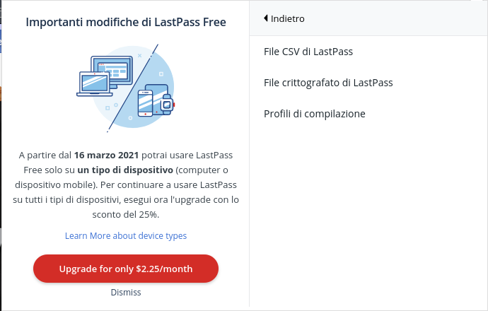
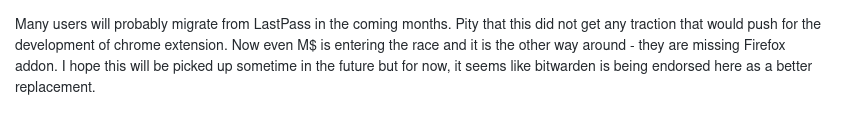

Away from LastPass - Password Manager Migration
Away from LastPass - Password Manager Migration
Created:
Abstract
As many people out there I manager my password using LastPass. It is a password manager who stores your passwords in the cloud allowing you to just have to remember one password for all. It's not the only solution out there with this purpose, but it's definitely the most famous. I was an happy user, until I read recently this news: LastPass will restrict free users to only one type of device starting next month
In particular you can read:
Starting on March 16, 2021, LastPass will start restricting its free service to only one device type, meaning those who sign up will be required to pick between accessing the service on their computer or their smartphone. The latter also includes LastPass access on tablets (IPads) and smartwatches. You’ll pick an “active device type” to decide on where you’ll use the service.
You can see how this is a huge problem. Therefore, a lot of people are migrating to a difference service, a little bit like the people are moving away recently from Whatsapp due to the privacy policy changes or from Google Photos due to the new limitations (luckily I found out I still have enough space there for some years)
In this article, I will not go and do a comparison of the different services out there (just a brief mention to motivate my choice), but I will show you how I moved out from Lastpass to…happy reading 😃
Content
In the following sections, I will focus more on the choices I made and the motivations at the base of those choices. I think there are way better articles explaining the steps to take in order to move from one service to another.
Getting Data
The first thing is fetching your data from LastPass. Looking on
the web you can find that LastPass offers you to export all your
passwords/logins/secure notes to a CSV file. You can do it from
the browser extension or from the site, I choose the first option

you will get a CSV file with the following headers:
url,username,password,extra,name,grouping,fav
Regarding the secure notes, they are encoded into the name field, with an empty URL, username, and password. I will take the chance to clean up the file from the useless data before importing it somewhere else. I just operate directly on the CSV, if you are not used to this format, I suggest you just log in to LastPass and check your data there before exporting everything.
Edit: in the end, I spent a day to reorganise all the data into folders, but that was because I never kept everything in order. So, the blame is on me, not on the services.
Alternatives
There are a lot of good alternatives out there, so you need to identify the right features you are looking for and then go on the web and search for the right candidates.
For me, the features I'm looking for, sorted by importance, are:
- Free & Open Source
- I don't want to do the migration and then end up having the same problem in a year time or so.
- Integration & Comfort
- If I have a service, but it's hard to access it, setup, or not easy to use, it's almost the same as having no service.
- Easy Migration
- If possible, I would like to have a way to just upload a CSV and be good to go.
Looking online, simply on Wikipedia or online on Twitter, articles, etc, I filtered out and shrieked the selection to just 4 alternatives:
- Firefox Lockwise (DEPRECATED)
- This is free (Mozilla) and integrated and synchronise automatically from the Firefox account. If you live with Firefox this is a great option, but looking for a Chrome extension, I found this comment from the related Github issue

You won't have a standalone desktop application and Android application doesn't have a very great reputation, especially looking at the most recent reviews. It has a CSV import option, but you have to work the Last pass CSV in order to fulfil the requested fields:
"url","username","password","httpRealm","formActionOrigin","guid","timeCreated","timeLastUsed","timePasswordChanged"
Basically, it's not different from what other browsers offer, like Chrome who use the Google cloud to synchronise your passwords, or Opera for instance.
- Bitwarden
- This is, by far, the most pushed alternatives by
the media online and I can see why:
- It is open source
- It has:
- all browser's extensions
- CLI and standalone application for all the operating systems
- mobile applications.
- integration from all the other main password managers out there, LastPass included.
The only Cons is that it has a Free account and then pricing tiers, limiting the amount of users you can have or other features like sharing data or SSO, etc. It's true, if you are just the typical user you probably don't care about those Business features at all, but nobody knows if, in the future, they might do a move like LastPass.(even if it would be a stupid one since we are witnessing this migration right now)
- LessPass
- This is also a valid open-source alternative. It also has browser extensions, mobile, and CLI applications. Plus, it generates your password by just apply a function to your master password: basically, the password came from your master password, the site, and some encryption algorithm. You don't have to synchronise anything. This is very appealing for me since I like so much functional programming. The cons in here are regarding its low popularity, so: you get less update for the application itself, just go on their Github and look at the commit frequency, and the import from other services is not straight forward
- pass
- This is the standard Unix tool to manage passwords and it is born as a local tool. However, the nerds are everywhere, so there are tons of third-party tools that are based on pass. Because of it, we get all the extensions and mobile applications. The question is, how do you get the synchronisation? It happens using git and Github. The downside is that you need to remember to push (the commit happens every time you modify the password store) your encrypted passwords. Finally, how do you import your data from other services? Well, as I said, this is the nerd tool, so you find the scripts parsing the different CSVs and import them in pass. The one we might need is Ruby LastPass to Pass import script
My Choice
In the beginning, I was thinking to move to Firefox Lockwise since I use that as my primary browser, but I also collect some work credentials as well. For the work credentials I use Chrome, so I need something that's browser-independent. Plus, I wish to use it on my mobile, so I need a good application for that, and Firefox Lockwise doesn't seem to shine there. Due to this, I discarded Firefox Lockwise as an alternative
LessPass doesn't have an automatic way of importing the LastPass data, and I have a lot of credentials. Plus, I'm scared about the low popularity of the service. Discarded
I'm left with Pass and Bitwarden. Well, if I was a normal person, I would just go for Bitwarden, despite the possibility of finding myself in a similar situation in the future. It is way better structured, supported out of the box (without third parties software) and the synchronisation happens automatically, without you having to go and push the data. BUT, I'm a nerd, so you know what I'm gonna do, let's go for Pass!
The Migration
This operation should be quite straightforward. Following the
pass website (https://www.passwordstore.org), we basically need to do these steps:
- Download & install Pass
- Validate the CSV modified. I modified it just to clean it up. If you have the data already in a good shape you shouldn't need this passage.
- Setup the main passphrase/password to encrypt your password
store. It should create a folder in
$HOME/.password-store/ - Run the Ruby LastPass to Pass import script
- Initialise the git repository
- Add the Github remote repository, I suggest using a private one even if the data would be encrypted anyway
If you choose Pass, I assume you can follow these steps, so I won't show you here the commands and so on.
What I would do instead is: reporting in here if I find some obstacles or odds/unexpected events during the process. This way you are warned about those and you might dodge them or just change your mind about this approach.
I Changed my Mind
What happened? Well, I looked closely at what I have to actually do in addition to the points specified in The Migration section and there's more:
- I have to set up a GPG key, (private & public)
- Not a big deal
after all, it's expected that you want your password store to
be encrypted, but you have to manage those keys carefully:
- Move them around yourself between machines. I didn't check what you have to do in order to have them available for mobile.
- What happens if you lose your private GPG key? Well, you are literally screwed, no chance to recover it by some hint or email recovery mechanism. All your passwords will be gone. Then, what you do to mitigate this? You could replicate your password store somewhere else with a different key, or save the private key online, or a hint of it? (on the private Github repository for instance) You don't want to do that. Plus, you need to manually keep this consistent and updated.
- Import Procedure
- Let say you have to setup your new machine
and compare the two alternatives, Pass and Bitwarden (I'm
also considering the amount of work I need to do to get it in
NixOssince I plan to move there, but it doesn't change so much):- Bitwarden:
- You download the app and install the browser plugins
- Login to your account with your master password: Done.
No need to have a local configuration or anything.
- Pass:
- Install pass & GPG agent
- You need to clone the password store and place it in your home. Notice how you might log in to Github/Bitbucket to do that, remember, you want it in a private place.
- Fetch the private key and move it to the GPG home folder
- Import the GPG private key
- Install the plugins
You can see how all this process is much more tedious in terms of steps and configurations than the previous one.
- Bitwarden:
Because of those reasons, I just decided to migrate to the more mainstream Bitwarden.
Conclusions
I hope this simple article could help you decide which password manager to choose. I know you were expecting something fancier from me rather than the actual winner, but in the end you need to evaluate the pros and cons carefully and don't fall into biases if you can.
What matters is to keep your passwords as safe as possible, especially the ones that matter. I really hope this would be the only article in this blog about password manager migration, but I am reasonably sure this is the case.